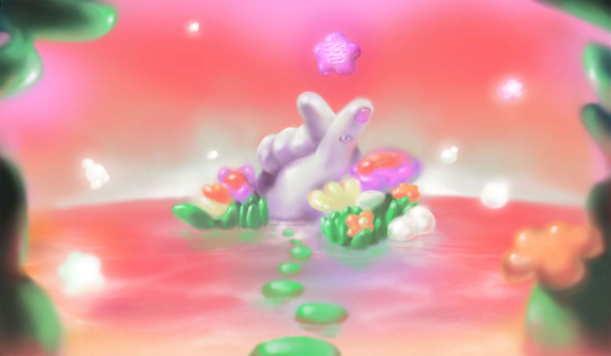
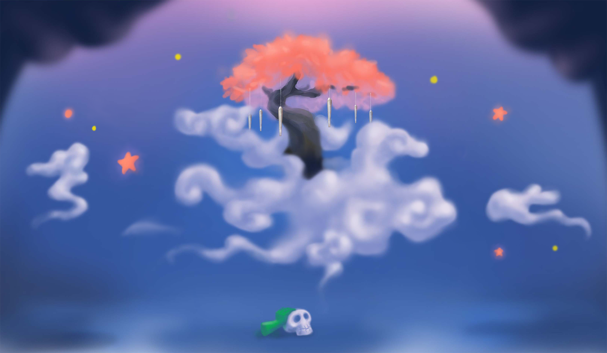
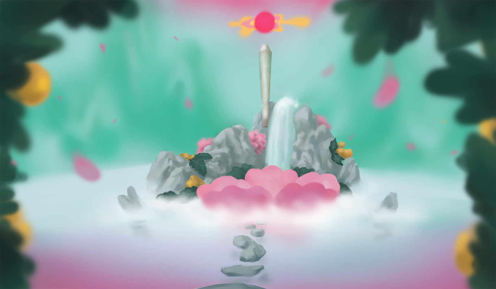
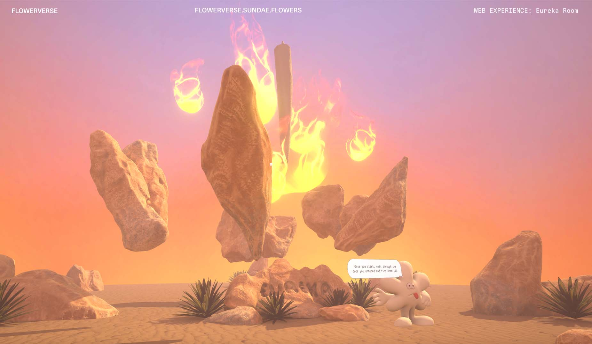
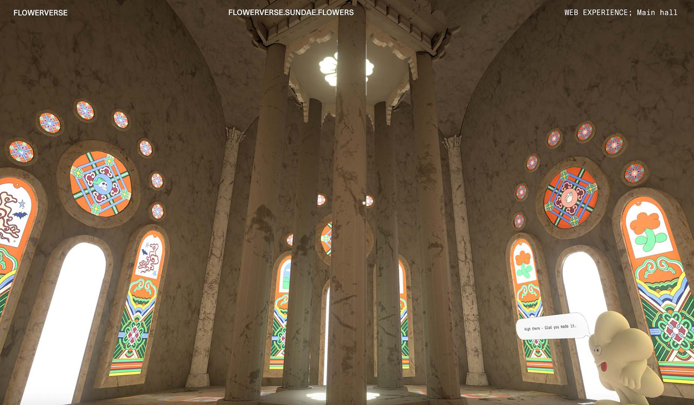

RESOLVE
Seemingly simplistic & common place. Bitter n’ sweet.
-
SIZE


MONOBLOC
Re
-
SIZE


POGI (wip)
based on cursive on cakes but simpler. a very handsome and blobby ting.
-
SIZE
Pogi started off as an inkling of a thought in the beginning stages of designing another typeface (Trickle).
It simply was that I would like to make a script typeface that had a less stuffy feeling, one that was a bit friendlier, but not corny y’know.
The thought, like many other thoughts, stayed a thought.
Until I was working on a graphic design project and needed type with those characteristics.
The thing that truly materialised this design was the fact that I now had a material context that suited the idea to help me restrict the paths I could go.
The project required “icing type”. My mind went DING! like an oven with a batch of freshly baked cookies.
On a tight deadline to crunch out the project, I quickly drew the type. Honestly, it was such a blur that I don’t remember most of this. But I do remember writing out sentences really quickly to see what letter frameworks could work best for this.
After the project ended I didn’t pick it back up for about 6 months. When I revisited it I let out an audible oof. Hard to admit, but it was kind of shit. A lot of shifting/improper connections between letters, changing lean angles, inconsistencies in weight, blah blah... I could go on forever. So I redrew everything and added more.
The next steps on this typeface came to me out of the blue when I was looking at a store sign near my apartment. What is the most fatal weakness of the script typeface that is used in the digital space? is what I asked myself.
It stared right at me: people wanting to track them in and out and having the ability to do so.
Now I’m all for people altering type and they have an obvious need to do so, but this particular adjustment fucks with the connections T-T
Doesn’t that just ruin the whole point of a script typeface then?
Sooooo I thought, it’d be so magical to have a variable axis for the tightness of the spacing between the letters.
And while we’re at it, if we’re maximising the ability to make words fit onto a sign (or something) nicely then
why not offer the typical solution for this in a non-script typeface: a width axis!
This is where Pogi is at right now. Stay tuned to see where else it goes!
TRICKLE (wip)
nope
-
SIZE
The start of making Trickle began as something fairly different (see Pogi process), but during some sketching it eventually branched off into a distilled question: How much can you mess with the texture of a typeface by messing with
On a tight deadline to crunch out the project, I quickly drew the type. Honestly, it was such a blur that I don’t remember most of this. But I do remember writing out sentences really quickly to see what letter frameworks could work best for this.
CONSTRUCTION ZONE 2022


A zine exploring the seemingly dangerous future through the lens of chance, fate and precautions.
The zine acts both as a fold up fortune teller and a poster allowing the reader to read their own fate through a non-linear publication.
It consists of hand lettering, collaged photography and illustrations.
Printed as a 4 colour Risograph print.
DESIGN, ILLUSTRATION, & LETTERING
CJ TYPE @ TYPOGRAPHICS 2022


Embodying CJ Type’s lively, culturally adventurous and friendly values in a 15 second commercial for Typographics NYC 2022.
In the video CJ Type’s various released type families (Dunbar, Louvetter & Pennypacker) travel the world through the lens of food.
The video pulls from the idea of a shared plate that originates from CJ’s home state Hawaii, wherein people from all different backgrounds come together to share a meal.
The video was animated through frame by frame animation integrating the many type styles of each font and their different features/diacritics.
MOTION & ART DIRECTION: Corinne Ang
AUDIO: CJ Dunn
SUNDAE SCHOOL: FLOWERVERSE 2022





Creative direction and conceptualising illustrations for a 3D web experience embodying
different Sundae School cannabis products as environments to immerse oneself in.
Pulling cues and characters from the corresponding packaging while also directing and guiding a team to build
out the web experience and teaser video.
CREATIVE DIRECTION: Corinne Ang, Audrey Bark
EXECUTIVE PRODUCTION: Dae Lim, Cindy Lim
MOTION DESIGN: Sejun Park
VIDEO EDITING: Audrey Bark
MUSIC: Mamiya
ILLUSTRATION: Corinne Ang, Kwangmoo Lee
RISD GD SPRING SPEAKER SERIES 2021


The identity and collaterals for RISD Graphic Design’s Spring Lecture Series in the spring of 2021.
The identity thematically plays with the act of planting and cultivating seeds of thought for growth through the talks in correlation to the growth of plants in the spring.
The illustrations pull forms from the flowers of each of the speaker’s home city and current location.
DESIGN, ILLUSTRATION & ANIMATION
PASSING BY, PRESSING ON, MOVING FORWARDS 2021


A hand drawn frame-by-frame flipbook exploring the commute as an allegory for growing up and moving between many different places while watching time and space pass by in a blur.
Printed on the Risograph with 4 colours. [copies no longer available.]
MOTION, PUBLICATION DESIGN & PRINTING
RISD YEARBOOK 2021


Publication design for the Rhode Island School of Design's yearbook for the class of 2021.
It acts as the final physical gathering of the RISD class of 2021.
A book that celebrates a senior class pushing their artistic practices both in person and online.
It displays the individual interests of each student through pixel drawings they made and portraits they provided.
DESIGN: Corinne Ang, Julie Alter, Baijun Chen, Labelle Chang, Leo Horton, Madi Ko, Soleil Singh, Amanda Yang
CONCEPT: Corinne Ang
PM: Julie Alter, Labelle Chang
POINTS OF INFLECTION 2021


Creating the identity, leading design and organizing a team to create collateral and carry out curation for RISD Graphic Design Senior Show (2021).
By looking at how 2020/2021 was a turning point in historical & cultural matters and in our personal lives,
Points of Inflection focuses on the way that we shape our paths and make connections (utilizing the physical manipulation of tape as a metaphor for this).
The tape makes a reappearance in the form of tape paths created by each participating student that connect throughout the identity.
Displayed at Woods Gerry Gallery from March 19–23 2021.
Visit poi.risd.gd to read more and see an archive of the displayed works.
Displayed at Woods Gerry Gallery from March 19–23 2021.
Visit poi.risd.gd to read more and see an archive of the displayed works.
DESIGN LEAD: Corinne Ang
DESIGN: Catherine Park, Javier Syquia
WEB: Serena Shen, Nicholas Park
PRODUCTION: Christie Zhong, Destiny Griesgraber, Eunice Hong
CURATION: Ethan Murakami, Amanda Yang
MOTION: Julia Chu
BARANGAY 2020/21


An exploration into the cultural standpoint in designing typography resulting in two typefaces (Monobloc and Fluoral) and a physical exhibition.
A barangay is the Filipino equivalent of a village.
If it takes a village to raise a child then the many stories of our past also become families in a village that shapes us.
In Barangay multiple typographic families are grown out of my intertwining narratives and they come together to tell the story of my upbringing as a Filipino-Chinese third culture kid.
Installed at RISD Graphic Design Commons from January 2021–March 2021.
Installed at RISD Graphic Design Commons from January 2021–March 2021.
TYPE DESIGN & EXHIBIT DESIGN
HAUNTED 2020


A photo series developed and printed in the darkroom and compiled into a zine exploring Providence’s spooky history.
The photos act as a response to H.P. Lovecraft’s The Shunned House where an uncle and nephew investigate a haunted house in Providence.
The zine intertwines my journey 3 of Providence’s haunts at night with my friends and the beginning narrative of The Shunned House.
Distributed at the Unbound Art Book Fair 2020 (Online).
Distributed at the Unbound Art Book Fair 2020 (Online).
PUBLICATION DESIGN (PRINT & WEB)
ROADTRIPPING 2019

A publication venturing into American road trip culture and its relation with Americana.
The structure and visuals are based on the American highway, maps and the feeling of being on the road.
One main article runs throughout while minor articles interject just like pitstops on the long journey of a road trip.
PUBLICATION DESIGN (PRINT & WEB)